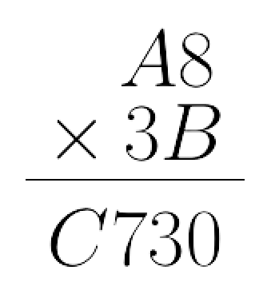

Problem of the Week
Problem C and Solution
This Product is a Mystery
Problem
The number \(A8\) is a two-digit number with tens digit \(A\) and units (ones) digit 8. Similarly, \(3B\) is a two-digit number with tens digit 3 and units digit \(B\).
When \(A8\) is multiplied by \(3B\), the result is the four-digit number \(C730\). That is,

If \(A\), \(B\), and \(C\) are each different digits from \(0\) to \(9\), determine the values of \(A\), \(B\), and \(C\).
Solution
In a multiplication question there are three parts: the \(multiplier\), \(multiplicand\) and \(product\). In our problem, \(A8\) is the multiplier, \(3B\) is the multiplicand, and \(C730\) is the product.
The units digit of the product \(C730\) is 0. The units digit of a product is equal to the units digit of the result obtained by multiplying the units digits of the multiplier and multiplicand.
So \(8 \times B\) must equal a number with units digit 0. The only choices for \(B\) are 0 and 5, since no other single digit multiplied by 8 produces a number ending in zero.
However, if \(B=0\), the units digit of the product is 0 and the remaining three digits of the product, \(C73\), are produced by multiplying \(3\times A8\). But \(3 \times A8\) produces a number ending in 4, not 3 as required. Therefore \(B \not = 0\) and \(B\) must equal 5. So the multiplicand is \(35\).
Since \(A8\) is a two-digit number, the largest possible value for \(A\) is \(9\). Since \(98\times 35=3430\), the largest possible value of \(C\) is \(3\). Also, the product \(C730\) is a four-digit number so \(C\not = 0\). Therefore, the only possible values for \(C\) are \(1,2,\mbox{ and }3\). We will examine each possibility for \(C\).
If \(C=1\), then \(C730\) becomes \(1730\). We want \(A8\times 35=1730\). Alternatively, we want \(1730\div 35=A8\). But \(1730\div 35\doteq 49.4\), which is not a whole number. Therefore, \(C\not =1\).
If \(C=2\), then \(C730\) becomes \(2730\). We want \(A8\times 35=2730\). Alternatively, we want \(2730\div 35=A8\). Since \(2730\div 35=78\), which is a whole number. Therefore, \(C=2\) produces a valid value for \(A\), namely \(A=7\).
If \(C=3\), then \(C730\) becomes \(3730\). We want \(A8\times 35=3730\). Alternatively, we want \(3730\div 35=A8\). But \(3730\div 35\doteq 106.6\), which is not a whole number. Therefore, \(C\not =3\).
We have examined every valid possibility for \(C\) and found only one solution. Therefore, \(A=7\), \(B=5\) and \(C=2\) is the only valid solution. We can easily verify that \(78\times 35=2730\).